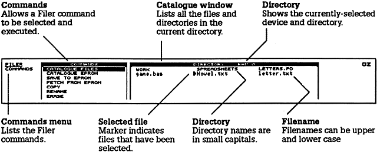

Section Four - Using the popdowns
The Cambridge Z88 popdowns are utility programs that you can make use of
while you are working within another application, such as PipeDream, the Diary,
or BBC BASIC. They pop down over your application screen, and disappear
again when you press ESC to return to the application.
The following popdowns are provided in the Cambridge Z88:
Calculator -  R R
|
Perform calculations |
|
Calendar - C
|
Look up dates |
|
Clock - T
|
See the current time, and today's date |
|
Alarm -A
|
Set alarms and reminders |
|
Filer - F
|
Perform operations with files |
|
Panel - S
|
Customise the Cambridge Z88 to your requirements |
|
Import/Export - X
|
Transfer documents between the Cambridge Z88 and
other makes of computer |
|
Index - INDEX or I
|
Enter applications, popdowns, or suspended activities,
and examine which cards are present
|
Using popdowns
You can either call a popdown by pressing the key combination given above,
or from the Index as follows:
Calling a popdown from the Index
Highlight the popdown's name on the APPLICATIONS list. You can move the
bar highlighting items on this menu by pressing the  and
and  keys at the
bottom right of the keyboard. If you move the bar too far, press to go up
again. Then press ENTER to run the popdown you have selected.
keys at the
bottom right of the keyboard. If you move the bar too far, press to go up
again. Then press ENTER to run the popdown you have selected.
The Calculator - R
If you ever need to perform calculations while using the Cambridge Z88 you can
simply call up the Calculator popdown, even if you are in the middle of doing
something else at the time:
The top line of the calculator displays the result of your calculation - initially
0.00 - and below that are the calculator keys. You can press these in either of
two ways, depending on your preference.
Either: Use the cursor keys 
 to highlight the operation you want, and
then press ENTER to enter the selected key.
to highlight the operation you want, and
then press ENTER to enter the selected key.
Or: Type the Cambridge Z88 key corresponding to the key you want, as listed
on the next page.
Calculator Key
Legend: |
Cambridge Z88 Key
Equivalent: |
Function: |
Clear
DEL
StoM
RclM
0 to 9
.
Unit
Y<>x
sIgn
Fix
%
+
X
-
/
= |
C
DEL
S
R
0 to 9
.
U
Y
I
F
%
+ or P
X, *, or T
- or M
/, \, or D
= |
Clear
Delete last keypress
Store to memory 0 to 9
Recall from memory 0 to 9
Enter digit
Decimal point
Convert units (see below)
Swap y and x
Change sign
Number of decimal places
Percentage (see below)
Plus
Times
Minus
Divide
Result |
Entering numbers
Enter a number by selecting the digits with the cursor keys, and press ENTER ; or
just type the number with the keys 0-9. You can use C or DEL to correct typing
mistakes. Numbers can contain a decimal point, obtained by typing the full-stop
key, and can be entered in scientific notation, as in
1.27E6, entered as 1 . 2 7 E 6, which means 1.27 x 106.
7.1E-13, entered as 7 . 1 E 1 1 3, which means 7.1 x 10-13.
The two operands of an operation can be exchanged, before pressing =, by
selecting the Y<>x operation, or pressing Y. For example, to find the reciprocal
of a previous calculation, enter
/ 1 Y =
All calculations are performed to an accuracy of nine decimal places, and
numbers can lie between 1E38 and 1E-38. The Calculator displays Error
if an
error, such as 1/0, occurs.
Display format
The format in which numbers are displayed can be altered with the Fix operation,
which gives the prompt
Fix?
Typing a number between 0 and 8 will fix the number of decimal places
displayed to the specified number; the initial value is 2. Typing 9 will give free
format.
Constants
Entering a number, followed by one of the arithmetic keys pressed twice, stores
the operation as a constant operation and displays the operator with K at the
top right-hand corner of the screen.
For example, entering
1.15 * *
sets up constant multiplication by 1.15, and displays
* K; entering
1000 =
then gives the result 1150.00, and
2000 =
gives the result 2300.00.
Storing and Recalling
You can store a result for use later in a calculation with the StoM and RclM
operations.
To store a result, select the StoM operation (or type S). The prompt
StoM ?
will be given, to which you should give a register number by typing a digit from
0 to 9. Up to ten different results can be stored, one in each register.
You can also add a result into a register, subtract a result from a register,
multiply a register by a result, or divide a register by a result, by giving the
StoM operation followed by '+', '-', '*', or '/' respectively, followed by the
register 0 to 9.
You can cancel a store operation in the middle by pressing ESC.
For example,
1.2 S 9
stores 1.2 in register 9, and
3.56 S-9
subtracts 3.56 from the same register. Finally
R 9
recalls the result from register 9.
Percentages
The '%' key works in conjunction with one of the other keys '*', '/', '+', or '-' to
calculate percentages, and to add or subtract a given percentage to or from a
number. The following examples illustrate each of these cases.
To find 12% of 1500 enter
1500 * 12 %
To express 660/880 as a percentage, enter
660 / 880 %
To add 15% on to 125 enter
125 * 15 % +
Likewise, to discount 125 by 15% enter
125 * 15 % -
Converting units
You can convert any result between the pairs of units displayed on the CONVERT
menu by selecting the Unit operation.
Highlight the unit you want to convert to using the cursor keys, and press ENTER
to perform the conversion. For example, to convert from Litres to Gallons
highlight Gallons, and to convert from Gallons to Litres highlight Litres. To exit
from the
CONVERT menu press ESC.
The Calendar - C
The Calendar provides a convenient tool for planning your engagements,
particularly when you want to look up dates quickly without leaving the
application you are currently working on. Calling the Calendar displays the page
for the current month, or the month you last looked at:
You use the cursor keys, in combination with the SHIFT and  keys, to move
about within the calendar as follows:
keys, to move
about within the calendar as follows:
|
|
previous day |
|
next day |
|
|
previous week |
|
next week |
|
SHIFT
|
previous month |
SHIFT |
next month |
|
|
previous year |
|
next year |
If necessary, the calendar will automatically turn a page to the next or previous
month.
The Calendar is accurate back to the year 1753 (when the Gregorian calendar
was accepted in England) and so has historical applications in addition to its
obvious business uses.
Searching for a day
You can also use the Calendar to go immediately to any date in any year.
Press ENTER , and the prompt
Look for: 17/03/1987
will be displayed, with today's date initially displayed. Type in the date you are
searching for, and press the ENTER key. The cursor will move to the specified
day.
The date can also be entered in the form
17 mar 1987
if you find this more convenient. The Cambridge Z88 defaults to the twentieth
century, so 17 mar 87 is equivalent
to 17 mar 1987.
Active days
If the Calendar popdown is called from the Diary application, days containing
information in the Diary will be identified on the Calendar with a pointer against
the date
17
Such active days can be found in the Calendar very quickly with the commands
|
|
previous active day |
|
next active day |
The Clock - T
The Clock popdown can be called whenever you need to see the correct time or
date. The time is displayed in 24-hour format, and is accurate to within a few
seconds per day. To set the time and date, see the details given in Set the clock,
P. 9.
Press ESC to return to the current application.
Because you may be using the Clock popdown to time something, the
Cambridge Z88 will not switch off after the timeout period if the clock is
displayed on the screen.
The Alarm - A
The Alarm popdown can be used to make your Cambridge Z88 remind you of
important events or appointments, or simply to wake you up in the morning.
Any number of alarms can be set up, and for each alarm you can specify the
following information:
DATE
The date on which the first alarm will occur. For a new alarm this is initially
set to the current date, or if the alarm is called from the Calendar or Diary, the
Calendar or Diary date.
TIME
The time at which the alarm will occur. For a new alarm this is set to the current
time, but you will usually alter it to the required alarm time. All times in the
Alarm are given in 24-hour format.
REASON/COMMAND
For each alarm you can specify a message of up to 23 characters, or a CLI
command string which will be executed to cause something to happen; see
below.
To set an alarm, press ENTER. The alarms you have set up will become active as
soon as you exit from the popdown by pressing ESC.
Note that the Cambridge Z88 will not switch off automatically while the alarm popdown
is on the screen.
Alarm options
Each alarm can also have the following optional settings:
Bell: can be ON
or OFF, determining whether the Cambridge Z88 bleeper
sounds when the alarm is activated.
Alarm type: normally
ALARM. This can be altered to
EXECUTE to allow a
command, in the
REASON FOR ALARM field, to be executed when the alarm
is activated. Thus you could, for example, cause the Diary to be entered and a
line of text to be typed in automatically on an alarm:
#D|CT Urgent message
For more information on executing commands, see CLI files, p. 173.
Repeat every: normally set to
NEVER, so that an alarm will occur just once, at
the specified time and date. The repeat rate can be altered to one of the
following to obtain a repeating alarm:
YEAR, MONTH, WEEK, DAY, HOUR, MINUTE, SECOND
You can move between these options with SHIFT and SHIFT
; pressing or
then increases or decreases the number of the unit selected. You can thus
specify every 3 HOURS, for example.
No. of times: specifies the number of times that the alarm will be repeated
before being cancelled. It is initially set to
NEVER, so that the alarm will occur
just once. It can be set to FOREVER by pressing , or a number from one
upwards by pressing . Holding the SHIFT key down while pressing or
will increase or decrease the number in tens, and and will change it in
hundreds.
By setting these fields appropriately, you can obtain almost every possible alarm
setting. For example, to cause an alarm to occur on the 3rd March, 3rd April, and
3rd May, at 12.00, set
DATE 3 Mar 1987
REPEAT EVERY 1 MONTH
TIME 12.00
NO, OF TIMES 3
Note: Do not set the alarm to repeat every second for ever. You will not be able
to cancel it without doing a soft reset.
Clearing alarms
To clear an alarm, select it with the cursor keys or on the list of alarms,
select
CLEAR ALARM with and , and press ENTER. With a repeating
alarm this just clears the present alarm; use CLEAR ALARM twice to remove a
repeating alarm completely.
If an alarm occurs while the Cambridge Z88 is turned off, the alarm will sound
and the Cambridge Z88 will be turned on in LOCK OUT state to prevent
accidental key-presses. To clear this state turn the Cambridge Z88 off and then
on again in the usual way, by pressing both SHIFT keys.
The Filer - F
With extension RAM and EPROM cards fitted, you will have the ability to store
many documents in your Cambridge Z88. The Filer provides everything you will
need for organising these; in particular it allows you to:
- Obtain a list (catalogue) of all your files, or the files in the optional EPROM
card (Catalogue Files and Catalogue EPROM).
- Move files to and from an EPROM, which provides permanent storage on a
removable card in slot 3 of the Cambridge Z88 (Save to EPROM and Fetch
from EPROM).
- Change the names of files within the filing system (Rename).
- Make additional copies of files (Copy), or remove files completely (Erase).
Other commands, for more advanced use of the Filer, are explained in the Filer
Reference section.
When you have finished using the Filer, press ESC to return to the original
application.
Hierarchical structure
The Cambridge Z88 filing system is a hierarchical filing system. This means that
you can group files together within 'directories'. This facility is akin to keeping
similar documents in a folder within a filing cabinet, and is of great assistance in
keeping a large number of files orderly. However, for simple use of the filing
system you will not need to use these facilities; see the Filer Reference section
for a full description.
Note: With Operating Systems up to and including 3.0 it is important that you
only exit the Filer by pressing ESC. In particular, if you are using Catalogue Files (CF) or Catalogue EPROM (CE) and you exit the Filer in the middle of
the operation by using INDEX or followed by a letter, then one of the files can
become marked as 'IN USE', and you will not be able to access it without
performing a soft reset.
Entering the Filer
The Filer display consists of two windows; a COMMANDS window, and a
DIRECTORY window:

File names
Each file or directory in the filing system has a name of up to twelve letters or
digits. This can be followed by a full stop and up to three further letters or digits
called the extension, and is normally used to describe the type of the file. Thus a
BASIC program could be saved as
game.bas
where bas is an extension used for all BASIC programs.
Upper- and lower-case letters are treated as equivalent in file names. In the
catalogue window directories are displayed in a small typeface.
Specifying devices
When saving and loading files to and from applications, such as PipeDream, you
will normally just give the file name and extension, if there is one. However, the
Filer keeps a fuller description of where the file is in the system, including
which RAM card it is on (the device), and several of the Filer commands will show
this full form of the file name.
The full form of a file name is
:DEVICE/filename
The most useful options for DEVICE are:
:RAM.0
:RAM.1 to :RAM.3 |
RAM in slot 0 (internal memory)
RAM in slots 1 to 3 (external memory) |
A full list is given in the Filer Reference section.
* can be used in any part of a file name to match any characters; thus
game*
represents any file name beginning with game, and
:RAM.*
represents all the RAM in the Cambridge Z88.
Giving Filer commands
You can give filer commands in one of three ways, depending which you find
most convenient:
- Select the command from the Filer COMMANDS list, using the and
keys. The list of commands will scroll up if you move the cursor below the
bottom of the screen. Then press ENTER to give the command.
- Select the command from the COMMANDS menu with the cursor keys, and
press ENTER to give the command.
- Give the key sequence for the command, as listed below.
COMMANDS menu
Press MENU to see the COMMANDS menu:
Selecting files
The Filer provides two ways of identifying the files you wish to operate on.
Either: Type the file name after the Filer prompt
Name :
Or: Select the file or files in the catalogue window, as described below.
Select First File - ENTER or TAB
Select Extra File - SHIFT ENTER or TAB
Select the first file by highlighting the file name using the cursor keys, and press
ENTER (or TAB). You can select further files, if required for an operation that can
be performed on several files at once (eg Erase), using SHIFT ENTER (or TAB again).
When selected, files are indicated by a marker to the left of the file name in the
catalogue window, as shown in the example on p. 83.
Filer commands
The commands for simple use of the Filer are listed below; for full use of the
hierarchical directory structure, see Section Seven - Filer Reference, p. 169
Catalogue Files - CF
Gives fuller information about a specified list of files. The subset of files to be
catalogued is specified after the prompt
Name :
Reply as follows:
ENTER
fred*
*.bas
|
catalogues all files (in the current directory)
catalogues all files beginning with fred
catalogues all files with a bas extension |
Each file will be listed as:
File name Creation time & date
Last updated
time & date Size
letter.txt Today 17:42:54 Today
17:42:54 1254
novel.txt 01-Jun-1987 17:41:17
Today 14:32:58 13112
game.bas 02-Jun-1987 12:27:43 02-Jun-1987 12:27:43
827
* in characters.
(The last updated time and date are only relevant if OPENUP is used from
BASIC.) If the file is open at the time it is catalogued, the size will not be shown.
When you catalogue or save to a blank EPROM, the display will go blank for a
few seconds while the EPROM is checked.
Catalogue EPROM - CE
Gives a list of information on all files in an EPROM card fitted in slot 3. The
directories and file names will be given to show where the files originally came
from.
Save to EPROM - ES
Copies files from the filing system to an EPROM card fitted in slot 3. The file or
files to be saved can either be selected as already described, or specified after
the prompt
Name :
Note that while a file is being saved to EPROM the screen will blank
intermittently until saving is completed, when the Cambridge Z88 will bleep.
Fetch from EPROM - EF
Copies files from EPROM card in slot 3 back to the filing system. Gives the prompts
Source :
Destination :
Source: specifies the name of the file in the EPROM.
Destination: gives the name it is to be saved as in the destination filing system.
It is initially set to the same as the source name, but you can edit it if you want
to save the file under a different name.
Copy - CO
Makes a second copy of a file. Gives the prompt
Name :
allowing you to specify the file name to be copied, followed by the prompt
New name :
for the name of the copy.
Multiple files (selected in the catalogue window) can be merged into a single
file with the Copy command; they will be appended in the order in which they
were selected.
Rename - RE
Allows the name of a file to be altered. Gives the prompts
Name :
New name :
For example, to change the name of a file from game.bas to 0ldversion you
would specify
Name : game.bas
New name : oldversion
Note that you cannot use the Rename command to move a file from one
directory or device to another. The new name must be a simple file name;
devices and path names are not permitted.
Erase - ER
Allows one or more files to be removed from the filing system. Gives the prompt
Name :
followed by the prompt
Confirm each file ? Yes
Pressing ENTER will prompt for each file you have selected to be erased, so
allowing you to change your decision for any particular file. Alternatively,
changing the option to No by typing N
will erase all the selected files without
further prompting.
You will not be permitted to erase a file which is in use; for example, a directory
containing other files, or an open BASIC file.
Files can only be erased from the EPROM with the ultra-violet EPROM eraser.
Note that because parts of an erased file may still be present, you should not
rely on the Erase command for disposing of confidential information from the
system.
Advanced Filer commands
The remaining Filer commands are for advanced use of the Filer, and the
hierarchical directory structure; these are explained in the Section Seven - Filer Reference,
p. 169.
The Panel - S
The Panel popdown allows you to set up aspects of the Cambridge Z88's
operation to suit your own preferences. You can alter the rate at which keys on
the keyboard auto-repeat when you hold them down, the time after which the
Cambridge Z88 will automatically switch off, the default device and directory
used by the Filer, and the parameters for the serial interface.
You can call up the panel by typing S (for Settings).
Altering the panel
To alter an option on the panel, first select it by moving the cursor to the
appropriate line with the cursor keys , , and .
Then type in the new
value for the option, and press ENTER.
In the case of options with alternative values you can also select between the
alternatives by giving the Next Option command, J, or you can specify the
option you want by typing the option's first letter.
You can save a particular set of panel settings in a panel file, using the Save
command on the FILES menu. Selecting the New command
on the FILES menu
returns the settings to their initial values.
Panel options
For each of the following options the initial default value is shown in brackets.
Note that options marked + affect only the state of new activities, and existing
activities retain their original settings.
Keyboard options
Auto-repeat rate (6): determines the rate at which keys auto-repeat when held
down continuously. Smaller values increase the repeat rate. A value of 0 gives
no auto-repeat.
Keyclick (No): altering the option to
Yes gives an audible bleep at each
keypress, to provide additional feedback during touch-typing.
+ Insert/Overtype (Insert): in Insert mode text typed at the keyboard is inserted
at the cursor position, and subsequent text on the line moves to the right to
make space for the new text. Some typists prefer Overtype mode, in which
text types over any text previously on the line. To insert text in Overtype
mode you need to make a gap in the line with the Insert Character command
U first.
Filer options
+ Default device (:RAM.0): the device to and from which files are saved and
loaded, which is set to the internal RAM memory filing system by default. It
can also be set to :RAM.1, :RAM.2, or :RAM.3, corresponding to the three
RAM cards.
+ Default directory: allows a path of one or more directories, which should
already exist, to be specified for all filing-system operations. By default the
top-level directory is selected.
Machine options
Timeout (mins) (5): determines the time after which the Cambridge Z88 will
switch off if nothing is typed at the keyboard; a value of 0 disables timeout.
Setting the timeout to 2 minutes will extend the effective battery life of the
Cambridge Z88 (1 minute is possible but not recommended for normal use).
Sound (Yes): allows the internal sound system to be switched off.
Map (Yes): allows the PipeDream page map display to be turned off if not
required. Typing and editing will be marginally faster when the map is disabled.
Map size (80): allows the size of the map to be altered up to a maximum of 92
characters across, or 255 characters across on an expanded machine. See
Expanded/Unexpanded, p. 30.
Date format (European): determines the format for all dates in the Cambridge
Z88; the default date format is European, so that dates are recognised in the
form:
day/month/year
The option can be changed to American to work with the format
month/day/year
Serial port parameters
Transmit baud rate (9600) / Receive baud rate (9600): can both be set to any of
the following values:
75, 300, 600, 1200, 2400, 9600, 19200, 38400
Parity (None): can be set to None, Space, Mark, Odd, or Even. The number of
data bits is 8 if None is specified, or 7 otherwise.
Xon/Xoff (Yes): determines whether the serial communication protocol uses
Xon/Xoff.
The number of start and stop bits is fixed as follows:
Transmit: 1 start bit, 2 stop bits.
Receive: 1 start bit, 1 stop bit.
Note: In versions of the Operating System up to and including 3.0 ODD and
EVEN parity settings do not result in correct behaviour.
Import/Export - X
The Import/Export popdown enables you to transfer files between the
Cambridge Z88 and other makes of computer. It communicates with the other
computer through the serial port on the right-hand side of the machine. To use
Import/Export you will need an Import/Export program for the other computer,
and a connecting lead. Follow the directions supplied with this for a detailed
explanation.
Details of the serial port connections are given in Appendix B.
Using Import/Export
The serial parameters should be set up in the Panel before running
Import/Export. Also run the communications software on the machine you wish
to communicate with.
The program recognises the following commands, which are given by typing the
first letter of the command:
|
S)end file |
Prompts for the name of the file to be transmitted, and then
transmits the name and file to the receiving computer.
Wildcards are accepted in the file name. |
|
R)eceive file |
Prompts for a file name; press ENTER to receive a file and use its
transmitted name, or type a name to rename the received file. |
|
B)atch receive |
Receives a sequence of named files, terminated by an end
batch code. |
|
E)nd batch |
Sends an end batch code (ESC Z). |
To send a batch of files use the following procedure:
- Give the Batch receive command on the receiving computer
- Send each file with a Send file command (or give a '*' wildcard in the file
name)
- Give an End batch command.
Import/Export protocol
The Import/Export protocol is given here for programmers who want to interface
the Cambridge Z88 to a computer by writing their own interface software.
Control sequences
|
Sequence |
Function |
ESC N
ESC F
ESC E
ESC Z
ESC B x x
XON = &11
XOFF = &13 |
Start of file name
Start of file/end of file name
End of file
End of file or end of list of files
Where x x is two ASCII digits representing a hex
byte. For example, the byte &A9 is transmitted with
ESC B A 9.
Receiver sends to transmitter to restart flow.
Receiver sends to transmitter to stop flow. |
Note that all the characters after the ESC code must be in upper-case ASCII.
Transfer protocol
First file, and subsequent files:
ESC N filename ESC F data ESC E
Last file:
ESC N filename ESC F data ESC Z
where data is a sequence of characters in the range &20 to &7E. Codes in the
range &00 to &1F and &7F to &FF should be transmitted using the ESC B prefix.
Import/Export will give a Suspended
message if a battery low is flagged
while sending or receiving, or if the Cambridge Z88 is switched off or the flap is
opened. In this case you must repeat the transfer.
The filename can be omitted.
The Index - I
The Index popdown allows you to
- Enter popdowns or applications.
- Start PipeDream (or BBC BASIC) with a new, blank, document (or program).
- Obtain a list of all the suspended activities you have in the Cambridge Z88,
and remove activities you no longer need.
- Insert and remove RAM, ROM, or EPROM cards, as explained in Section
One - Getting started, p. 25.
The Index screen
Entering an application
To enter an application, or a popdown, select its name on the APPLICATIONS
list by moving the highlighting bar up and down with the cursor keys and ,
and press the ENTER key:
Diary
PipeDream
BASIC
Calculator
Calendar
Clock
Alarm
Filer
PrinterEd
Panel
Terminal
Imp-Export |
D
P
B
R
C
T
A
F
E
S
V
X |
When the bar reaches the bottom of the screen, the list scrolls up to show the
remaining options.
Entering PipeDream (or BBC BASIC) from the Index APPLICATIONS list creates
a new, blank document (or program).
Suspended activities
The SUSPENDED ACTIVITIES list shows the following information for each
suspended activity:
|
Heding |
Meaning |
YOUR REF.
APPLICATION
WHEN SUSPENDED
CARDS |
The name given to the document (with the
PipeDream FC or FL commands, the Diary or
PrinterEd FC, FS, or FL commands, or the
BASIC *NAME command)
The application name
The time and date the document was suspended
The number of the card slot, for activities using
an application card |
There can be more than one PipeDream and BBC BASIC suspended activity, but
only one for each of the other applications.
Re-entering a suspended activity
To re-enter a suspended activity, select it by moving the highlighting bar across
with the cursor keys, and then press the ENTER key. Alternatively, pressing P
or B repeatedly will enter each PipeDream or BBC BASIC activity in turn.
Killing activities - KILL
To kill a suspended activity, select it on the SUSPENDED ACTIVITIES list with
the cursor, and type KILL. The activity will be removed from the list, and the
document (or program) associated with it will be lost. PURGE is equivalent to
a soft reset, which kills all suspended activities, and should therefore be used
with great caution.